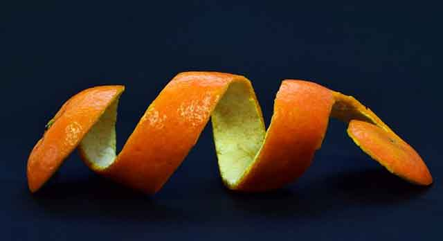

강아지 귤 먹어도 될까요?
가정에서 가장 즐겨 먹는 과일 중 하나가 바로 귤인데요. 맛있게 먹다 보면 어느새 옆으로 다가와 애처로운 눈빛으로 쳐다보는 강아지를 발견합니다. 귤 하나를 주고 싶지만, 마음속에 불편한 생각이 떠오릅니다! 강아지가 귤을 먹어도 되는 건지, 만약 먹어도 된다면 어느 정도까지 괜찮은 것인지 궁금하시겠죠. 그래서 준비했어요. 강아지가 귤을 먹어도 괜찮은 것인지 알아볼게요!
"강아지가 귤을 먹어도 괜찮아요!"
귤에는 강아지에게 위협이 되는 독성이 있는 건 아니라서 귤 먹는 것이 특별히 문제가 되지는 않아요. 오히려 귤에는 다양한 영양소가 있어 유익하다고 할 수 있어요. 특히 비타민C가 풍부하죠. 하지만 강아지는 비타민C를 너무 많이 섭취할 필요는 없습니다. 강아지는 체내 비타민C 생성이 가능하기 때문이죠. 오히려 너무 많은 비타민C 섭취는 설사를 유발할 수 있습니다.
"귤에는 어떤 장점이 있나요?"
귤에는 수분이 많습니다. 그래서 귤을 섭취하면 강아지 탈수 증상을 예방할 수 있습니다. 수분이 부족한 강아지에게 자연식품으로 수분 섭취하는 것은 도움이 될 수 있습니다.
귤에는 항산화 물질, 비타민이 풍부해서 피부 미용은 물론 면역력 향상에도 도움이 됩니다. 이 외에도 비타민A, 비타민B-6, 마그네슘의 공급원이 되기도 합니다. 따라서 적정량을 섭취하는 것은 강아지 건강을 챙기는 데 도움이 됩니다.
"귤을 먹일 때 주의할 점이 있나요?"
과유불급이라고 하죠! 한 번에 많은 양을 주는 것은 오히려 강아지에게 해가 될 수 있습니다. 더불어 장기간 지속해서 귤을 주는 것은 강아지에게 부담될 수 있어 가끔 간식으로 주는 것 이상을 권하지는 않습니다.
게다가 귤에는 식이섬유가 풍부한데, 지나친 식이섬유 섭취는 설사의 원인이 될 수 있습니다.
만약 소량으로라도 귤을 주고 싶다면, 껍질을 반드시 제거하고 귤 내부 껍질에 붙은 흰 부분까지 제거해서 작은 크기로 잘라 주는 것이 좋습니다.
"강아지가 귤껍질을 먹었어요! 괜찮을까요?"
강아지는 귤껍질을 먹어서는 안 됩니다. 강아지는 귤껍질을 소화하기 어렵고 위장에 부담을 주면서 위장질환의 원인이 될 수 있습니다.
설령 귤껍질을 깨끗하게 씻고 작게 잘라 준다고 하더라도 껍질 내 남아 있는 소량의 농약 성분이나 적은 양이라도 소화되지 못하는 등의 문제를 염두에 둔다면, 껍질을 주지 말아야 합니다.
사람처럼 강아지도 알레르기 반응이 있습니다. 귤 역시 반응할 가능성이 있고요. 따라서 귤을 급여하기 전에 어떤 반응이 있는지를 먼저 살피고 만약 별다른 반응이 없다면 소량으로, 이상한 반응이 느껴진다면 바로 중단하시고 심한 증상을 보일 때는 빠르게 병원을 찾는 게 좋습니다.
[출처] 강아지 귤 먹어도 될까요? ｜ 작성자 땡구와뽀냥이